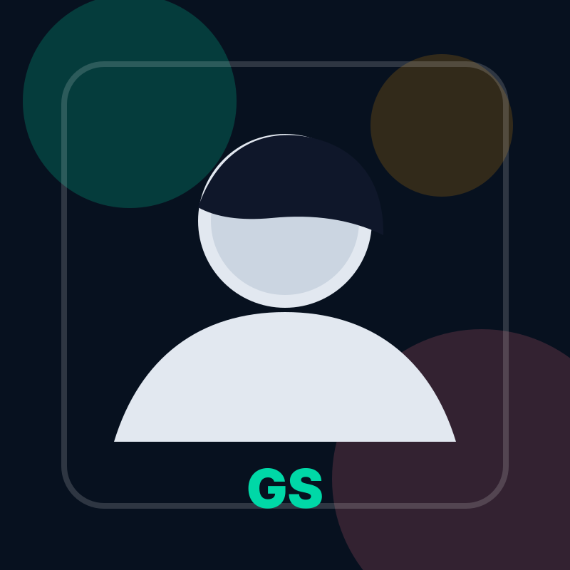

Senior Associate Consultant
Infosys
February 2026 - Present · Hyderabad
Security Engineer · DevSecOps · Observability
I am a Security Engineer with 3+ years of experience across Splunk SIEM/SOAR, Elastic Stack, threat detection, Python automation, REST APIs, and cloud security. I turn noisy signals into reliable detection and response workflows.
0
Years Experience
0
SOAR Playbooks
0
Workload Reduced
Profile

Bengaluru based Security Engineer focused on DevSecOps, observability, SIEM/SOAR, and automation-led incident response.
$ detection_pipeline --status
Reducing response time with automated triage...
About Me
I design and automate threat detection workflows using Splunk SIEM, SOAR, Elastic Stack, Python scripting, REST APIs, SPL queries, and observability pipelines. My work connects business needs with scalable security engineering.
At Accenture, I built playbooks for phishing, malware, exploit triage, and insider threat use cases. At Infosys, I am helping migrate monitoring systems from SolarWinds to Elastic Stack and Zabbix while improving visibility across infrastructure, network, and security telemetry.
Experience
Senior Associate Consultant
February 2026 - Present · Hyderabad
Skill Stack
Splunk ES, Splunk SOAR, Elastic Stack, alert triage, playbooks, notables.
SPL queries, IOC pipelines, MITRE ATT&CK mapping, phishing and malware use cases.
Python scripting, REST APIs, JSON correlation, enrichment workflows, operational tooling.
Elastic, Kibana, Zabbix, OpenTelemetry, Syslog, Windows events, SLI/SLO tracking.
Contact
Open to global remote opportunities and relocation for Security Engineering, DevSecOps, Cloud Security, SIEM/SOAR, and Observability roles.